Pets
Domestic Shorthair
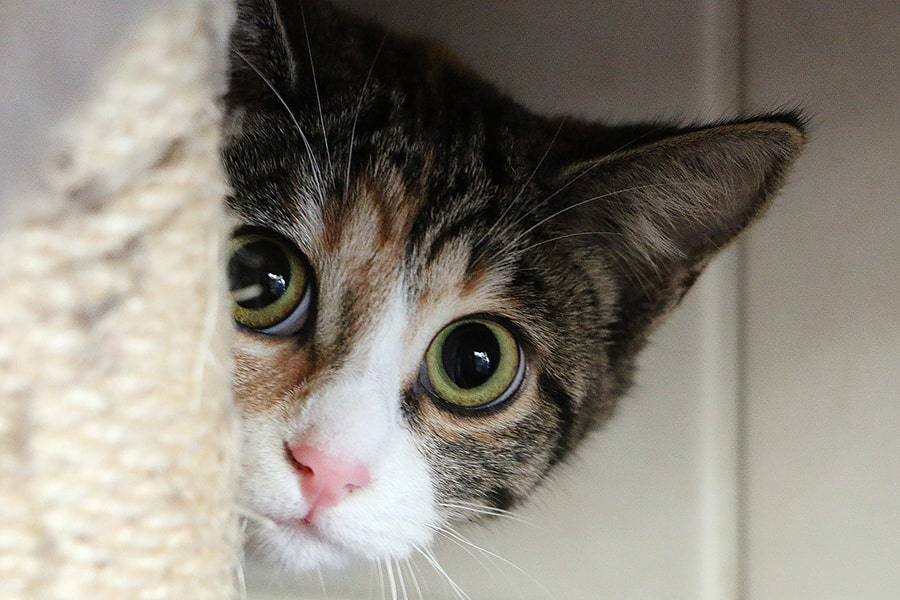Domestic Shorthair, or “moggie” in the United Kingdom, does not refer to an actual breed. These cats have mixed ancestry, which can vary from cat to cat, not unlike Mixed Breed dogs or “mutts.”
Photo Gallery
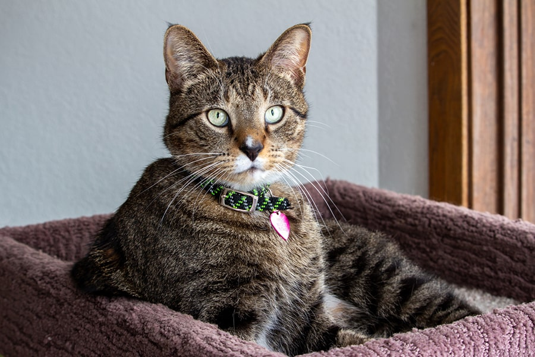 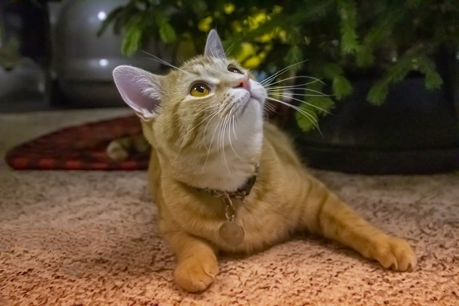Personality
- Quiet
- Playful
- Lazy
Russian Blue Cats
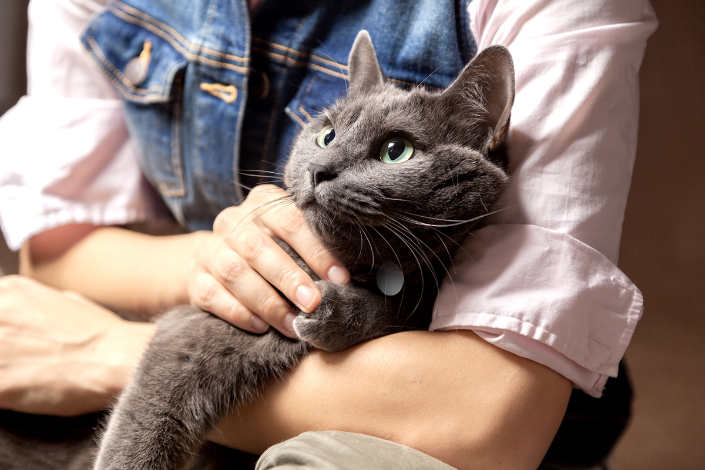Russian Blue cats belong to the same classification as the British Blue Cat, the Chartreux of France, and the Korat of Thailand.
Photo Gallery
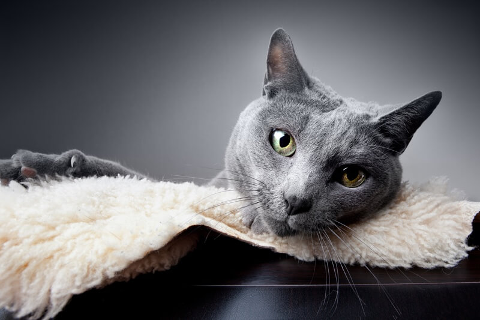 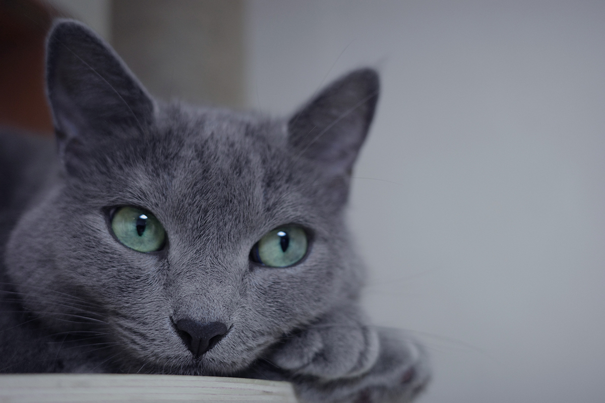Personalities
- Gentle
- Well-behaved
- Quiet
American Bobtail Cat
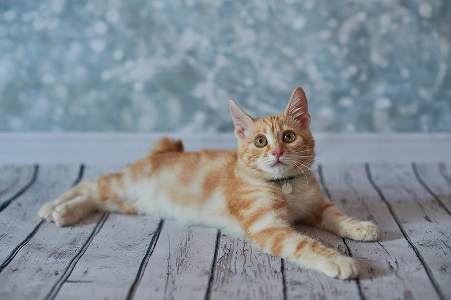Although the American Bobtails appearance resembles that of a wild cat, the Bobtail’s personality is anything but. These domestic cats are outgoing, empathetic, and they make for excellent companions.
Photo Gallery
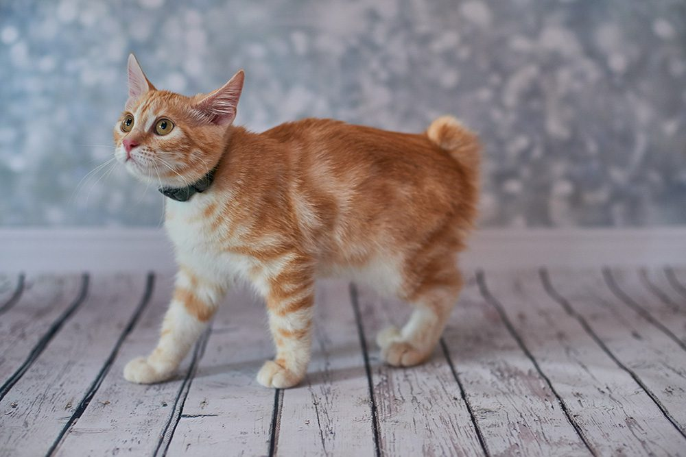 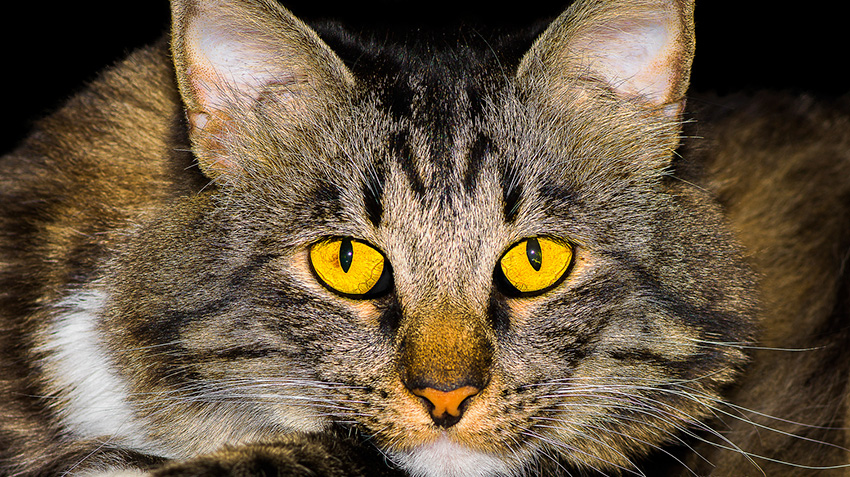Personalities
- Playful
- Friendly
- Intelligent
Bengal Cat
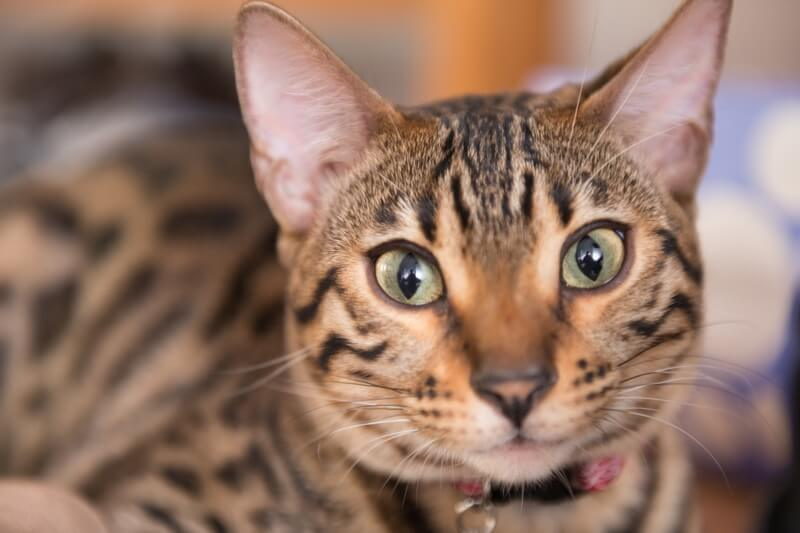Is that a little leopard? No, it’s a Bengal cat! These cats have an exotic appearance that resembles their wildcat ancestors, but they make much safer family pets.
Photo Gallery
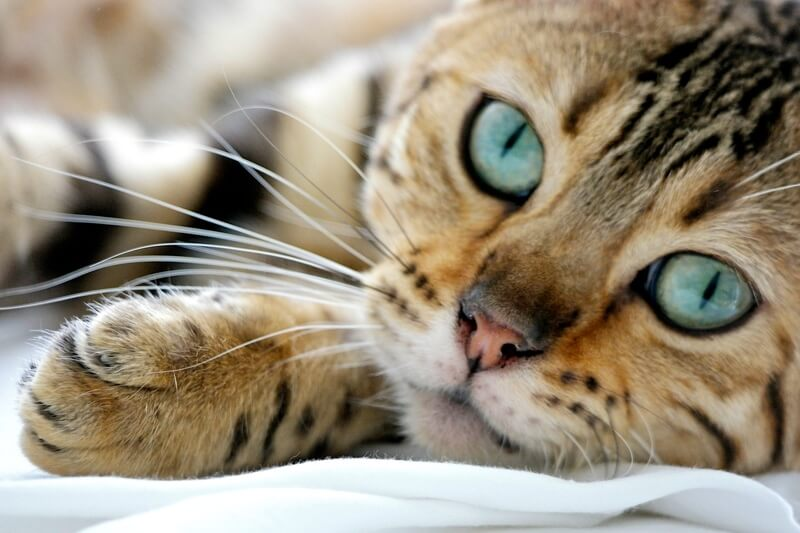 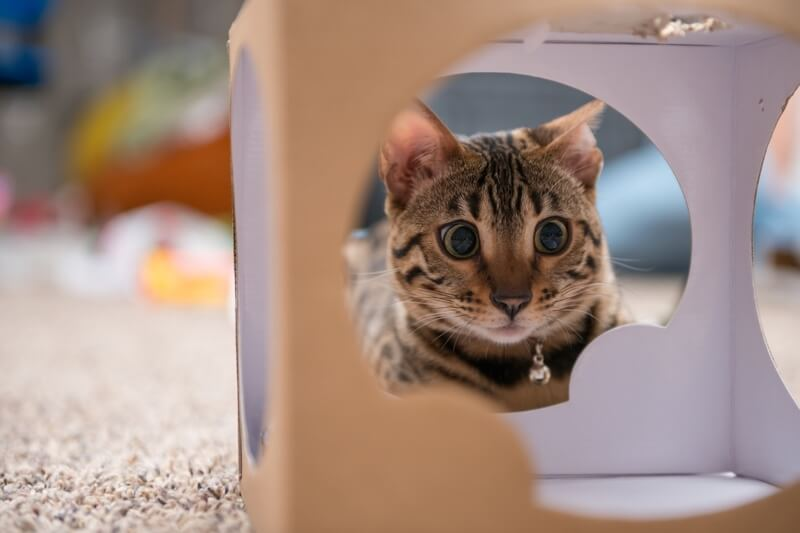Personalities
- Sweet
- Gregarious
- People-oriented
Bambino Cat
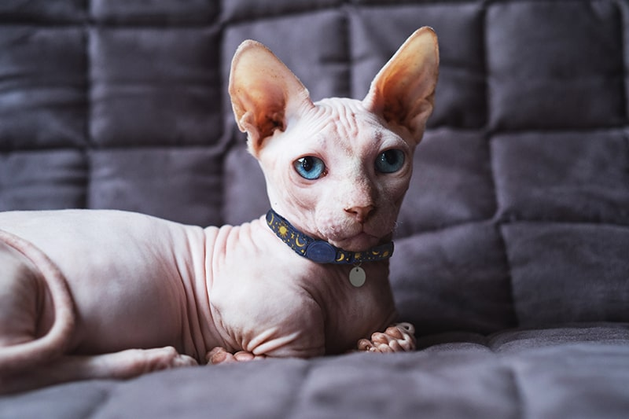What is a Bambino cat? Perhaps the first traits you will notice about these cats are that they are easy to spot in a crowd, they enjoy snuggling with their families, and they often have some spunk in their step.
Photo Gallery
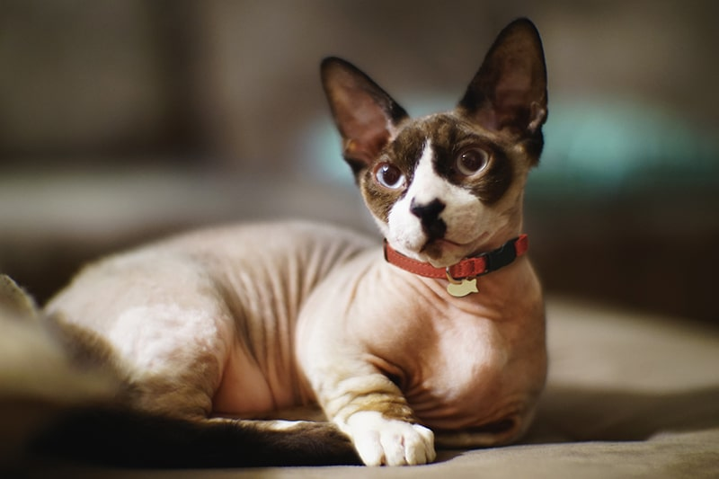 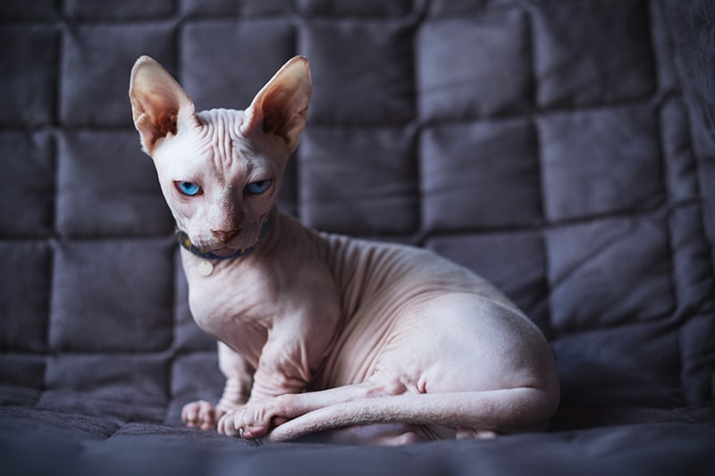Personalities
- Quirky
- Energetic
- Loving